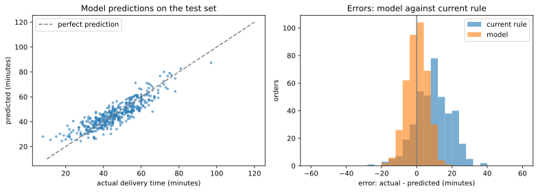

Chapter 14: An End-to-End Project¶
Predicting delivery times, from raw data to a report
Learning outcomes
After this chapter you should be able to:
- frame a practical problem as a data science question with a target, a metric and a baseline;
- write a cleaning function that turns a raw export into an analysis table and reports what it changed;
- explore the data to guide feature choices;
- build a complete preprocessing-and-model pipeline with
ColumnTransformer, including imputation and encoding; - compare candidate models by cross-validation, tune the best one, and evaluate it once on a held-out test set;
- analyse errors by group and explain a model with permutation importance;
- write a short, honest report of the result and its limitations.
This chapter carries out a complete project, using the tools of the whole book in the order the workflow of Chapter 1 prescribes. The problem is a common one: a food-delivery service shows customers an estimated delivery time when they order, and the estimates are often wrong. The project's aim is a better estimate. As everywhere in this book, the data is simulated in code, so that every step can be run and checked; the simulation includes the kinds of mess that real exports contain.
import io
import numpy as np
import pandas as pd
import matplotlib.pyplot as plt
14.1 The question¶
The service's current estimate is a fixed rule: 30 minutes plus 2 minutes per kilometre. Customers complain that it is too optimistic at busy times and too pessimistic for short orders. Talking to the operations team sharpens the request into a question:
At the moment an order is placed, using only information available then, can we predict how many minutes the delivery will take more accurately than the current rule?
Three decisions follow from this framing.
- Target: delivery time in minutes, from order to doorstep: a regression problem (Chapter 8).
- Metric: mean absolute error (MAE) in minutes, because customers experience the size of the error directly and the team finds "off by 6 minutes on average" easy to understand. We will also report the share of orders predicted within 10 minutes.
- Baselines: the current rule, and predicting the average delivery time. A new model is worthwhile only if it clearly beats the rule.
The phrase available at the moment of ordering rules out features such as the actual time the food left the kitchen, which would leak the answer (Section 10.4).
14.2 Getting the data¶
The operations team provides an export of 2,000 recent orders. We simulate it, including its problems; in a real project this code would be replaced by pd.read_csv("orders_export.csv").
def simulate_export(n=2000, seed=2024):
rng = np.random.default_rng(seed)
day = rng.integers(0, 90, n)
hour_weights = np.array([2, 4, 9, 9, 5, 3, 3, 4, 6, 10, 10, 8, 5, 3], dtype=float)
hour = rng.choice(np.arange(10, 24), n, p=hour_weights / hour_weights.sum())
minute = rng.integers(0, 60, n)
placed = (pd.Timestamp("2024-01-01") + pd.to_timedelta(day, unit="D")
+ pd.to_timedelta(hour, unit="h") + pd.to_timedelta(minute, unit="min"))
kinds = np.array(["pizza", "north indian", "south indian", "chinese", "cafe"])
restaurant = rng.choice(kinds, n, p=[0.25, 0.25, 0.2, 0.15, 0.15])
prep = pd.Series(restaurant).map({"pizza": 15, "north indian": 20, "south indian": 12,
"chinese": 18, "cafe": 8}).to_numpy()
distance = np.clip(rng.gamma(2.0, 1.8, n), 0.3, 20).round(1)
items = 1 + rng.poisson(1.5, n)
weather = rng.choice(["clear", "rain", "fog"], n, p=[0.75, 0.2, 0.05])
rider_exp = rng.integers(0, 60, n)
rush = np.isin(hour, [12, 13, 19, 20, 21])
weekend = placed.dayofweek >= 5
wx = pd.Series(weather).map({"clear": 0, "rain": 7, "fog": 10}).to_numpy()
minutes = (10 + prep + 3.2 * distance + 1.5 * items + 8 * rush + 3 * weekend + wx
- 0.08 * rider_exp + rng.normal(0, 5, n) + rng.exponential(2, n)).round(0)
df = pd.DataFrame({"order_id": np.arange(100001, 100001 + n), "placed_at": placed,
"restaurant_type": restaurant, "distance_km": distance, "items": items,
"weather": weather, "rider_exp_months": rider_exp.astype(float),
"delivery_minutes": minutes})
# the mess of a real export
messy = rng.choice(n, 200, replace=False)
df.loc[messy[:100], "restaurant_type"] = df.loc[messy[:100], "restaurant_type"].str.title()
df.loc[messy[100:], "restaurant_type"] = " " + df.loc[messy[100:], "restaurant_type"] + " "
df.loc[rng.choice(n, 100, replace=False), "weather"] = None
df.loc[rng.choice(n, 60, replace=False), "rider_exp_months"] = np.nan
df.loc[rng.choice(n, 5, replace=False), "distance_km"] *= -1
df.loc[rng.choice(n, 6, replace=False), "delivery_minutes"] = [0, 0, 480, 600, 1, 720]
df = pd.concat([df, df.sample(15, random_state=seed)], ignore_index=True)
return df.to_csv(index=False)
raw_csv = simulate_export()
print(raw_csv[:300])
order_id,placed_at,restaurant_type,distance_km,items,weather,rider_exp_months,delivery_minutes
100001,2024-01-22 22:05:00,pizza,3.0,4,clear,29.0,38.0
100002,2024-03-01 12:01:00, south indian ,7.7,4,clear,52.0,61.0
100003,2024-01-09 16:09:00,pizza,4.4,2,clear,36.0,44.0
100004,2024-01-20 17:25:00,
14.3 Cleaning¶
First, a look at the raw table, exactly as Chapter 4 recommends:
raw = pd.read_csv(io.StringIO(raw_csv), parse_dates=["placed_at"])
print(raw.shape)
print(raw.isna().sum())
print(raw["restaurant_type"].value_counts().head(8))
print(raw[["distance_km", "items", "rider_exp_months", "delivery_minutes"]].describe().round(1))
print("duplicated order ids:", raw["order_id"].duplicated().sum())
(2015, 8)
order_id 0
placed_at 0
restaurant_type 0
distance_km 0
items 0
weather 100
rider_exp_months 60
delivery_minutes 0
dtype: int64
restaurant_type
pizza 474
north indian 440
south indian 375
chinese 269
cafe 254
Pizza 32
pizza 30
south indian 26
Name: count, dtype: int64
distance_km items rider_exp_months delivery_minutes
count 2015.0 2015.0 1955.0 2015.0
mean 3.6 2.5 29.6 48.0
std 2.6 1.2 17.2 24.9
min -7.6 1.0 0.0 0.0
25% 1.7 2.0 15.0 39.0
50% 3.1 2.0 30.0 47.0
75% 4.9 3.0 44.0 55.0
max 19.7 7.0 59.0 720.0
duplicated order ids: 15
The inspection finds: 15 duplicated orders; restaurant types with stray spaces and capitals; missing weather (100) and rider experience (60); negative distances; and delivery times of 0, 1 and several hundred minutes, which are impossible for a local delivery and look like system errors (an order left open, a test order). Following Section 5.11, the fixes go into one function that starts from the raw text and reports what it did.
def clean_orders(csv_text):
df = pd.read_csv(io.StringIO(csv_text), parse_dates=["placed_at"])
log = {"raw rows": len(df)}
df = df.drop_duplicates(subset="order_id")
log["duplicates removed"] = log["raw rows"] - len(df)
df["restaurant_type"] = df["restaurant_type"].str.strip().str.lower()
bad_distance = df["distance_km"] <= 0
df.loc[bad_distance, "distance_km"] = np.nan
log["impossible distances set missing"] = int(bad_distance.sum())
bad_time = (df["delivery_minutes"] < 5) | (df["delivery_minutes"] > 180)
log["impossible delivery times dropped"] = int(bad_time.sum())
df = df[~bad_time] # the target must be trustworthy
log["final rows"] = len(df)
return df.reset_index(drop=True), log
orders, log = clean_orders(raw_csv)
for k, v in log.items():
print(f"{k:>34}: {v}")
print(orders["restaurant_type"].value_counts())
raw rows: 2015
duplicates removed: 15
impossible distances set missing: 5
impossible delivery times dropped: 6
final rows: 1994
restaurant_type
pizza 530
north indian 484
south indian 407
chinese 298
cafe 275
Name: count, dtype: int64
Two different treatments were chosen on purpose. Rows with an impossible target are dropped: a model cannot learn from a wrong answer, and there are only six. Impossible feature values (negative distances) are set to missing and left for the pipeline to impute, because the rest of each row is fine. Missing weather and rider experience are also left to the pipeline, so that the same imputation is learned from training data and applied identically to new orders.
14.4 Exploring¶
The exploration asks which information available at order time relates to delivery time. We first derive the time features, the hour of the day and whether it is a weekend, since the timestamp itself means nothing to a model.
orders["hour"] = orders["placed_at"].dt.hour
orders["weekend"] = (orders["placed_at"].dt.dayofweek >= 5).astype(int)
print(orders["delivery_minutes"].describe().round(1))
print(orders.groupby("weather", dropna=False)["delivery_minutes"].agg(["count", "median"]).round(1))
print(orders.groupby("restaurant_type")["delivery_minutes"].median().sort_values())
print("correlation with distance:", round(orders["delivery_minutes"].corr(orders["distance_km"]), 3))
count 1994.0
mean 47.3
std 12.2
min 8.0
25% 39.0
50% 47.0
75% 55.0
max 104.0
Name: delivery_minutes, dtype: float64
count median
weather
clear 1404 45.0
fog 80 53.5
rain 410 52.5
NaN 100 44.5
restaurant_type
cafe 40.0
south indian 43.0
pizza 46.0
chinese 50.0
north indian 52.0
Name: delivery_minutes, dtype: float64
correlation with distance: 0.669
fig, axes = plt.subplots(2, 2, figsize=(11, 7))
axes[0, 0].hist(orders["delivery_minutes"], bins=40, edgecolor="white")
axes[0, 0].set_xlabel("delivery time (minutes)")
axes[0, 0].set_ylabel("orders")
axes[0, 0].set_title("Distribution of delivery times")
axes[0, 1].scatter(orders["distance_km"], orders["delivery_minutes"], s=6, alpha=0.4)
d = np.linspace(0, 20, 50)
axes[0, 1].plot(d, 30 + 2 * d, color="tab:red", label="current rule: 30 + 2 x km")
axes[0, 1].set_xlabel("distance (km)")
axes[0, 1].set_ylabel("delivery time (minutes)")
axes[0, 1].set_title("Time against distance")
axes[0, 1].legend()
by_hour = orders.groupby("hour")["delivery_minutes"].median()
axes[1, 0].plot(by_hour.index, by_hour.values, marker="o")
axes[1, 0].set_xlabel("hour of the day")
axes[1, 0].set_ylabel("median delivery time")
axes[1, 0].set_title("Rush hours are slower")
groups = ["clear", "rain", "fog"]
axes[1, 1].boxplot([orders.loc[orders["weather"] == g, "delivery_minutes"] for g in groups],
tick_labels=groups)
axes[1, 1].set_ylabel("delivery time (minutes)")
axes[1, 1].set_title("Weather")
fig.tight_layout()
fig.savefig("project-eda.svg")
![Four panels. Top left: a histogram of delivery times, a single hump around 40 to 50 minutes with a tail to the right. Top right: delivery time against distance, a rising cloud of points; the red line of the current rule lies below most of the cloud for short distances and has a shallower slope than the points. Bottom left: median delivery time by hour, with peaks at lunch (12 to 13) and dinner (19 to 21). Bottom right: box plots of delivery time for clear, rain and fog, with rain and fog higher than clear.](img/project-eda.svg)
The exploration supports the operations team's complaints and suggests what a model needs:
- Delivery time rises with distance, more steeply than the rule's 2 minutes per kilometre, and the rule's 30-minute base is too low for most orders.
- Lunch and dinner rush hours are slower, which the rule ignores.
- Rain and fog add several minutes.
- Restaurant types differ, cafés being fastest, presumably through preparation time.
14.5 The pipeline¶
The model's inputs mix numerical columns (some with missing values) and categorical columns (one with missing values). scikit-learn's ColumnTransformer applies different preprocessing to different columns and joins the results, and the whole thing goes into one pipeline with the model, so that every learned step is fitted on training data only.
- Numerical columns: fill missing values with the training median (
SimpleImputer), then standardise. - Categorical columns: fill missing values with the label
"unknown", then one-hot encode, ignoring categories never seen in training (handle_unknown="ignore"), so that a new restaurant type does not crash the model.
from sklearn.compose import ColumnTransformer
from sklearn.pipeline import Pipeline, make_pipeline
from sklearn.impute import SimpleImputer
from sklearn.preprocessing import StandardScaler, OneHotEncoder
from sklearn.model_selection import train_test_split
numeric = ["distance_km", "items", "rider_exp_months", "hour", "weekend"]
categorical = ["restaurant_type", "weather"]
X = orders[numeric + categorical]
y = orders["delivery_minutes"]
X_train, X_test, y_train, y_test = train_test_split(X, y, test_size=0.2, random_state=42)
preprocess = ColumnTransformer([
("num", make_pipeline(SimpleImputer(strategy="median"), StandardScaler()), numeric),
("cat", make_pipeline(SimpleImputer(strategy="constant", fill_value="unknown"),
OneHotEncoder(handle_unknown="ignore")), categorical),
])
print(X_train.shape, X_test.shape)
print(preprocess.fit_transform(X_train).shape)
(1595, 7) (399, 7)
(1595, 14)
Seven input columns become 14 model features: five numerical columns plus one-hot columns for five restaurant types and four weather values (three kinds plus "unknown").
Note: why hour is used as a number here
Treating the hour as a number lets a linear model fit only a straight-line trend through the day, which cannot capture two rush-hour peaks. Tree-based models can split the hour into ranges and find the peaks. An alternative for linear models would be a "rush hour" indicator or one-hot encoding of the hour. The comparison of models below shows the difference this makes.
14.6 Baselines and candidate models¶
First the two baselines, on the training data, so that every candidate has a target to beat. The current rule needs no training; for the mean baseline, cross-validation keeps it fair.
from sklearn.model_selection import KFold, cross_val_score, cross_val_predict
from sklearn.dummy import DummyRegressor
from sklearn.metrics import mean_absolute_error
cv = KFold(n_splits=5, shuffle=True, random_state=0)
rule_train = 30 + 2 * X_train["distance_km"].fillna(X_train["distance_km"].median())
print(f"current rule: MAE {mean_absolute_error(y_train, rule_train):.2f}")
mean_mae = -cross_val_score(DummyRegressor(), X_train, y_train, cv=cv, scoring="neg_mean_absolute_error")
print(f"mean baseline: MAE {mean_mae.mean():.2f}")
current rule: MAE 11.50
mean baseline: MAE 9.62
The current rule is worse even than predicting the average delivery time for every order: its base of 30 minutes is too low for most orders. Now three candidate models in the same pipeline: linear regression, a random forest, and histogram gradient boosting, a fast implementation of gradient-boosted trees (an ensemble that adds trees one after another, each correcting the errors of those before). Cross-validated on the same folds:
from sklearn.linear_model import LinearRegression
from sklearn.ensemble import RandomForestRegressor, HistGradientBoostingRegressor
candidates = {
"linear regression": LinearRegression(),
"random forest": RandomForestRegressor(n_estimators=200, min_samples_leaf=5, random_state=0, n_jobs=-1),
"gradient boosting": HistGradientBoostingRegressor(random_state=0),
}
for name, model in candidates.items():
pipe = Pipeline([("prep", preprocess), ("model", model)])
s = -cross_val_score(pipe, X_train, y_train, cv=cv, scoring="neg_mean_absolute_error")
print(f"{name:>18}: MAE {s.mean():.2f} +/- {s.std():.2f}")
linear regression: MAE 5.64 +/- 0.25
random forest: MAE 5.54 +/- 0.37
gradient boosting: MAE 4.95 +/- 0.22
All three models beat both baselines by a wide margin. Gradient boosting is the strongest; it can split the hour into ranges and so capture the rush-hour peaks, as the note above predicted. The random forest is only slightly better than linear regression. We tune gradient boosting.
14.7 Tuning¶
Histogram gradient boosting has a few important hyperparameters: the learning_rate (how much each new tree corrects), max_iter (the number of trees), and max_leaf_nodes (the size of each tree). A small grid, cross-validated:
from sklearn.model_selection import GridSearchCV
pipe = Pipeline([("prep", preprocess), ("model", HistGradientBoostingRegressor(random_state=0))])
grid = GridSearchCV(pipe, {
"model__learning_rate": [0.03, 0.1],
"model__max_iter": [200, 400],
"model__max_leaf_nodes": [7, 15, 31],
}, cv=cv, scoring="neg_mean_absolute_error")
grid.fit(X_train, y_train)
print("best settings:", grid.best_params_)
print(f"best CV MAE: {-grid.best_score_:.2f}")
best settings: {'model__learning_rate': 0.03, 'model__max_iter': 400, 'model__max_leaf_nodes': 7}
best CV MAE: 4.67
The improvement over the default settings is modest, which is common: a sensible model with default settings is usually most of the way there, and tuning adds a little. GridSearchCV has refitted the best pipeline on the whole training set, ready for the test.
14.8 The final test¶
All decisions are made. The test set, untouched until now, gives the honest estimate:
final = grid.best_estimator_
pred = final.predict(X_test)
rule_test = 30 + 2 * X_test["distance_km"].fillna(X_train["distance_km"].median())
err_model = np.abs(y_test - pred)
err_rule = np.abs(y_test - rule_test)
print(f"test MAE: model {err_model.mean():.2f} min, current rule {err_rule.mean():.2f} min")
print(f"within 10 minutes: model {(err_model <= 10).mean():.1%}, rule {(err_rule <= 10).mean():.1%}")
print(f"mean signed error (actual - predicted): model {np.mean(y_test - pred):.2f}, rule {np.mean(y_test - rule_test):.2f}")
test MAE: model 4.71 min, current rule 11.06 min
within 10 minutes: model 91.5%, rule 51.1%
mean signed error (actual - predicted): model 0.10, rule 9.19
The test MAE agrees with the cross-validated estimate, a sign that nothing leaked. The model's typical error is less than half the rule's, and it is close to unbiased, while the rule underestimates on average by many minutes, which is exactly the customers' complaint.
fig, axes = plt.subplots(1, 2, figsize=(11, 4))
axes[0].scatter(y_test, pred, s=8, alpha=0.5)
lims = [10, 120]
axes[0].plot(lims, lims, color="gray", linestyle="--", label="perfect prediction")
axes[0].set_xlabel("actual delivery time (minutes)")
axes[0].set_ylabel("predicted (minutes)")
axes[0].set_title("Model predictions on the test set")
axes[0].legend()
bins = np.arange(-60, 61, 4)
axes[1].hist(y_test - rule_test, bins=bins, alpha=0.6, label="current rule")
axes[1].hist(y_test - pred, bins=bins, alpha=0.6, label="model")
axes[1].axvline(0, color="gray")
axes[1].set_xlabel("error: actual - predicted (minutes)")
axes[1].set_ylabel("orders")
axes[1].set_title("Errors: model against current rule")
axes[1].legend()
fig.tight_layout()
fig.savefig("project-results.svg")

Errors by group¶
An average can hide groups for which the model does badly (Section 13.3). The test errors by weather and by time of day:
res = X_test.assign(abs_error=err_model, rule_error=err_rule,
rush=X_test["hour"].isin([12, 13, 19, 20, 21]))
print(res.groupby(res["weather"].fillna("unknown"))[["abs_error", "rule_error"]].agg(["count", "mean"]).round(2))
print(res.groupby("rush")[["abs_error", "rule_error"]].mean().round(2))
abs_error rule_error
count mean count mean
weather
clear 295 4.63 295 9.63
fog 11 5.25 11 19.22
rain 72 4.86 72 15.79
unknown 21 5.06 21 10.67
abs_error rule_error
rush
False 4.90 8.12
True 4.55 13.63
The model's error is similar across weather conditions and times of day, while the rule's error is largest exactly where the model helps most: in rain and fog, and at rush hours. Orders whose weather was not recorded are predicted about as well as the rest, because the pipeline imputes "unknown" and the other features carry most of the information; the small count for fog means its average is the least certain.
What the model relies on¶
Permutation importance measures how much the test error grows when one feature's values are randomly shuffled, breaking its link with the target while keeping everything else. A large increase means the model depends on that feature. Because it is applied to the whole pipeline, it works with the original columns:
from sklearn.inspection import permutation_importance
imp = permutation_importance(final, X_test, y_test, scoring="neg_mean_absolute_error",
n_repeats=10, random_state=0)
importance = pd.Series(imp.importances_mean, index=X_test.columns).sort_values(ascending=False)
print("increase in MAE (minutes) when each column is shuffled:")
print(importance.round(2))
increase in MAE (minutes) when each column is shuffled:
distance_km 5.55
hour 1.91
restaurant_type 1.79
weather 1.00
items 0.33
rider_exp_months 0.20
weekend 0.15
dtype: float64
Distance matters most by far, followed by the hour of the day and the restaurant type, then the weather, with smaller contributions from the number of items, rider experience and weekends. This matches the operations team's understanding, which is reassuring: a model that relied on something implausible would need investigating before use.
14.9 Communicating the result¶
The final product of the project is not the model but a decision, so the result has to be written for the people who will make it. A short report might read as follows.
Example 14.1: Project report
Question. Can we estimate delivery times at the moment of ordering more accurately than the current rule (30 minutes + 2 minutes per km)?
Data. 2,000 orders from a 90-day export. We removed 15 duplicates and 6 orders with impossible delivery times (under 5 or over 180 minutes); 5 negative distances and the missing weather (100 orders) and rider-experience values (60) were imputed inside the model.
Method. A gradient-boosted tree model using distance, number of items, restaurant type, weather, hour, weekend and rider experience, all known when an order is placed. Settings were chosen by 5-fold cross-validation on 80% of the orders; the remaining 20% were used once for the final evaluation.
Result. On the held-out orders, the model's average error is about 4.7 minutes, against about 11.1 minutes for the current rule, and about 91% of its estimates are within 10 minutes of the actual time, against about 51% for the rule. The rule underestimates on average by about 9 minutes and is worst in rain, in fog and at rush hours; the model's accuracy is similar across these conditions.
Limitations. The data covers 90 days in winter; behaviour in other seasons, during festivals or after changes to the rider fleet is untested. Fog is rare in the data, so estimates in fog are the least certain. The model predicts typical times; individual deliveries vary by several minutes for reasons not recorded.
Recommendation. Trial the model's estimates on a share of orders, monitor the error weekly, and retrain monthly as new data arrives.
The numbers in the report are taken from the outputs above; in a real project they would be filled in by code, so that the report cannot drift out of step with the analysis. Everything here can be reproduced by running the chapter's code from the top: the data simulation, the cleaning function, the fixed seeds and the single pipeline make the whole path from raw export to report repeatable (Section 13.5).
14.10 Summary¶
Summary
- Start with a precise question: target, metric, baselines, and the information available at prediction time.
- Inspect the raw export, then write a cleaning function that logs every change. Drop rows with an untrustworthy target; leave feature problems to imputation inside the pipeline.
- Explore to find which features matter and how (a non-linear effect of hour suggested tree models).
ColumnTransformerapplies imputation, scaling and one-hot encoding to the right columns inside one pipeline;handle_unknown="ignore"protects against new categories.- Compare baselines and candidates with the same cross-validation folds; tune the best with
GridSearchCV; test once. - Analyse errors by group, and explain the model with permutation importance; check that the explanation makes sense.
- Report the question, data, method, result with uncertainty, limitations and recommendation, in the reader's language.
14.11 Exercises¶
Exercise 1
Add a feature rush (1 for orders placed at 12, 13, 19, 20 or 21 hours, else 0) and cross-validate the linear regression pipeline again. Does the linear model improve, and why?
Answer
Xr = X_train.assign(rush=X_train["hour"].isin([12, 13, 19, 20, 21]).astype(int))
prep_r = ColumnTransformer([
("num", make_pipeline(SimpleImputer(strategy="median"), StandardScaler()), numeric + ["rush"]),
("cat", make_pipeline(SimpleImputer(strategy="constant", fill_value="unknown"),
OneHotEncoder(handle_unknown="ignore")), categorical)])
s = -cross_val_score(Pipeline([("prep", prep_r), ("model", LinearRegression())]),
Xr, y_train, cv=cv, scoring="neg_mean_absolute_error")
print(f"linear regression with rush flag: MAE {s.mean():.2f}")
linear regression with rush flag: MAE 4.36
Yes, a great deal: the MAE falls from about 5.6 to about 4.4 minutes, below even the tuned gradient boosting model (4.67). The rush flag gives the linear model the two peaks that a straight-line trend in hour could not represent, and since this simulated data was generated by an additive rule, a linear model with the right features suits it very well. Good features can matter more than the choice of model. In a real project this finding would send the work back to the modelling stage (the loop of Figure 1.1), to compare both kinds of model with the improved features by cross-validation, before the test set is touched.
Exercise 2
Why were rows with impossible delivery times dropped, while negative distances were set to missing instead?
Answer
The delivery time is the target: a row with a wrong target teaches the model a wrong answer and corrupts the evaluation, and it cannot be sensibly imputed. A negative distance is a bad value in one feature of an otherwise valid row; setting it to missing keeps the row's correct target and other features, and the pipeline fills the gap in the same way it will for any new order with missing data.
Exercise 3
A team member suggests adding the feature "minutes from order to pick-up by the rider", which makes the test MAE fall to 2 minutes. Should it be used?
Answer
No, not for this purpose. The pick-up time is known only after the order has been prepared, so it is not available when the estimate must be shown to the customer. Using it is target leakage: it makes the evaluation look excellent but the model cannot be used at order time. (It could be useful for a different question, such as updating the estimate after pick-up.)
Exercise 4
Compute, for the test set, the share of orders for which the model's estimate was too optimistic by more than 10 minutes (actual more than 10 minutes longer than predicted). Why might the company care about this number separately from the MAE?
Answer
late = (y_test - pred) > 10
print(f"{late.mean():.1%} of test orders arrived more than 10 minutes after the estimate")
print(f"for the rule: {((y_test - rule_test) > 10).mean():.1%}")
4.3% of test orders arrived more than 10 minutes after the estimate
for the rule: 45.6%
Errors are not equally costly: a delivery that arrives much later than promised annoys customers far more than one that arrives early. The MAE treats both directions alike, so the share of badly late deliveries is worth tracking on its own, and the company might even prefer a model that errs slightly on the late side of its estimates.
Exercise 5
List three things you would check before deploying this model, beyond its test MAE.
Answer
For example: that the features are available in the live system at the moment of ordering, with the same definitions and units (for instance that distance is measured the same way); that performance holds in other periods (validate on the most recent weeks, or on a period after the training data, rather than a random split); and how the model behaves for unusual inputs (new restaurant types, very long distances, missing values), together with a plan to monitor the error after launch and retrain.
14.12 Quiz¶
(a quiz block could not be built: question 4 (choice): the answer is not one of the options)